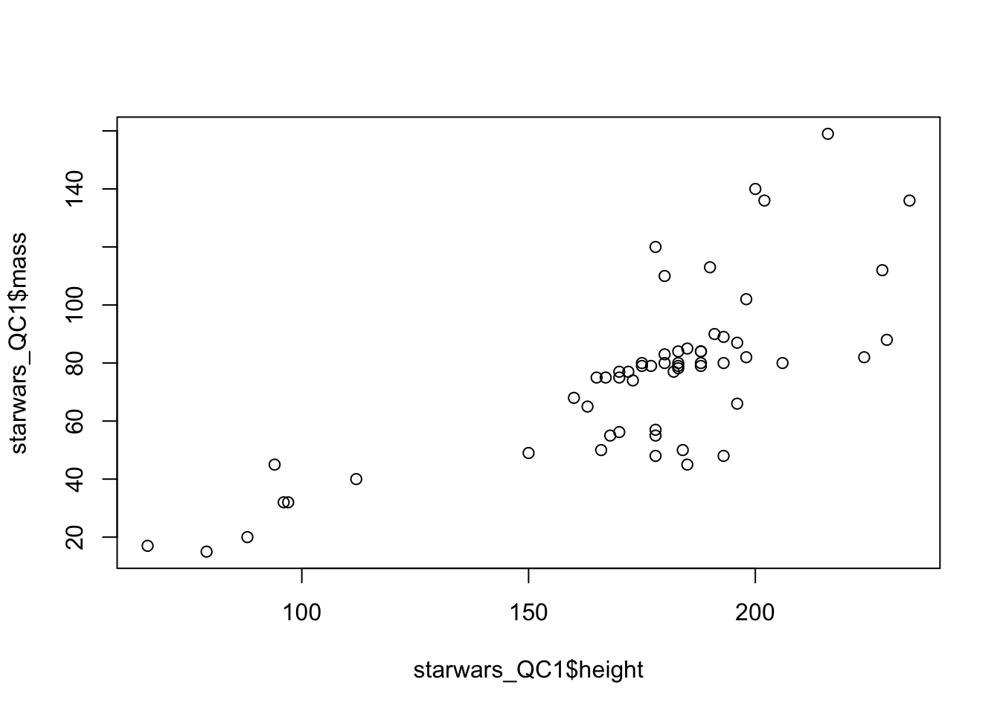
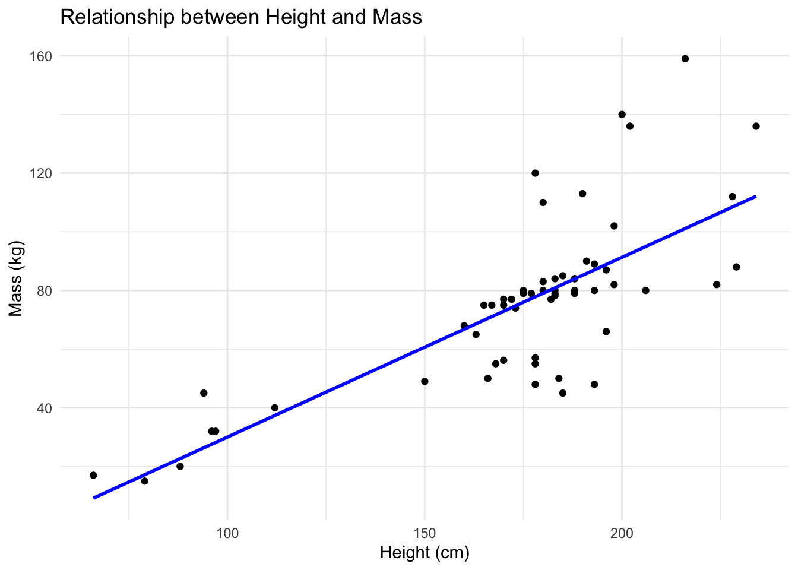
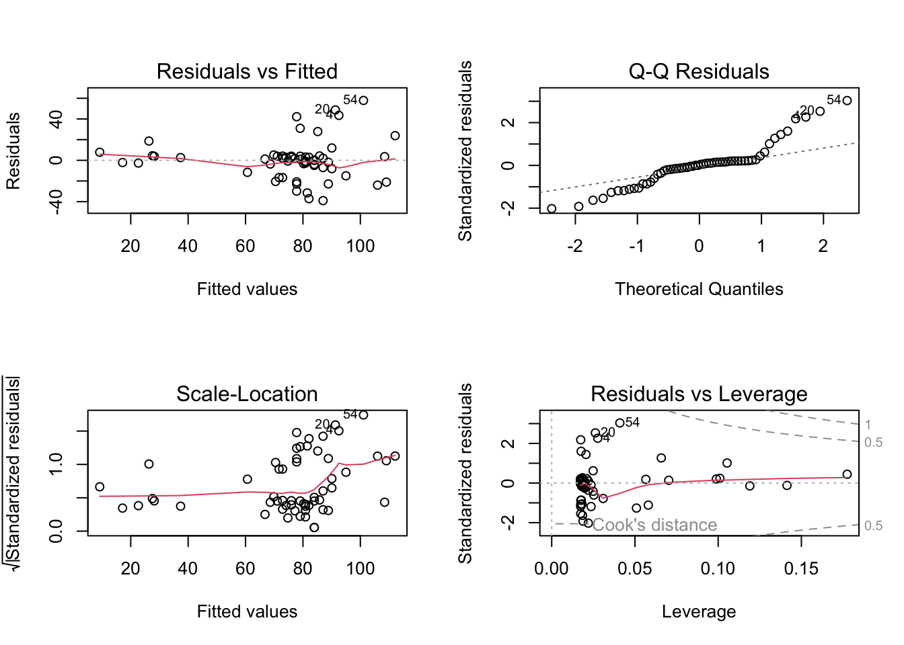
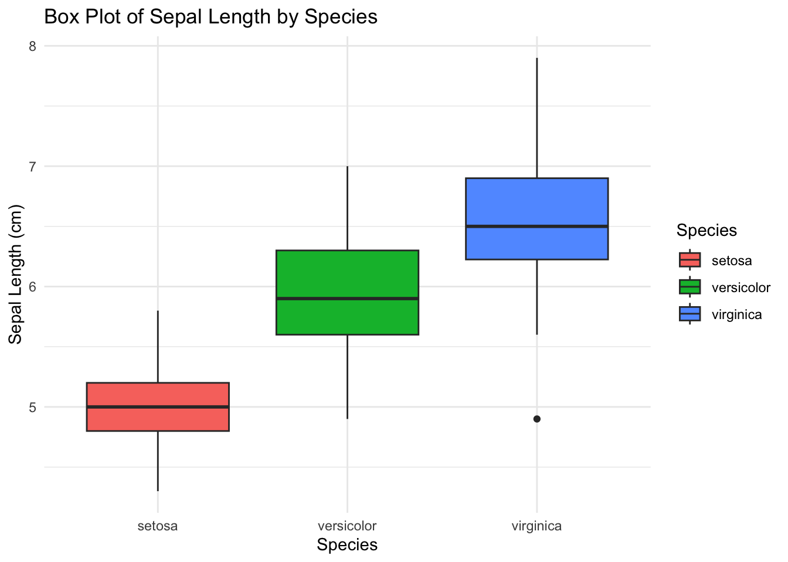
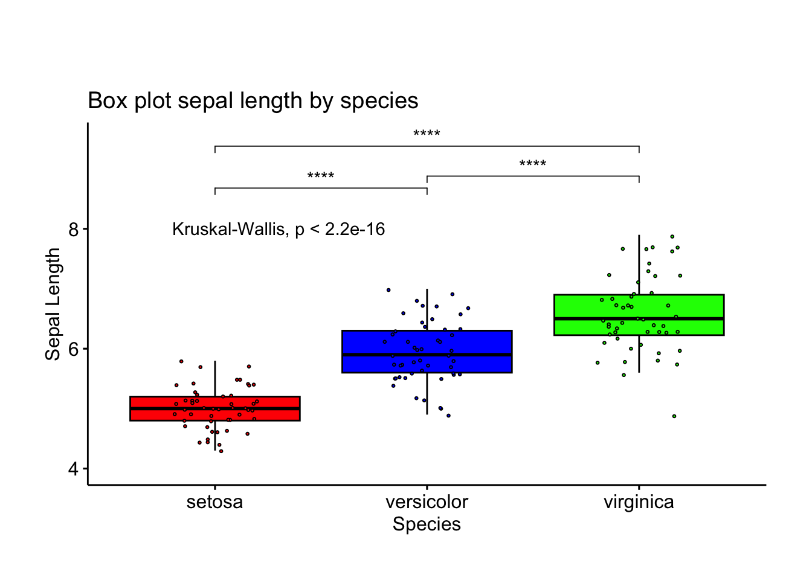
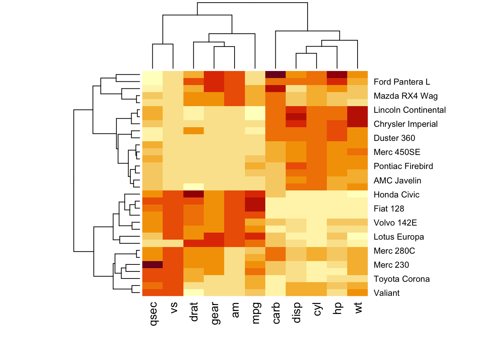
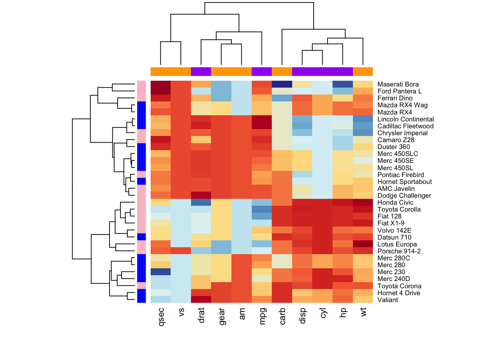
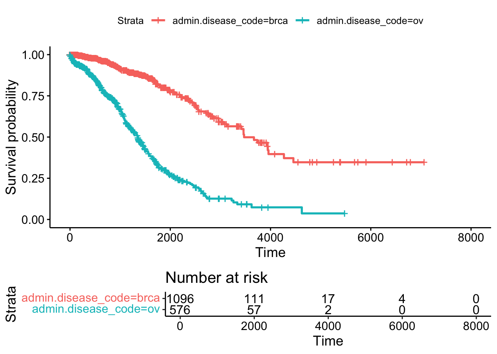
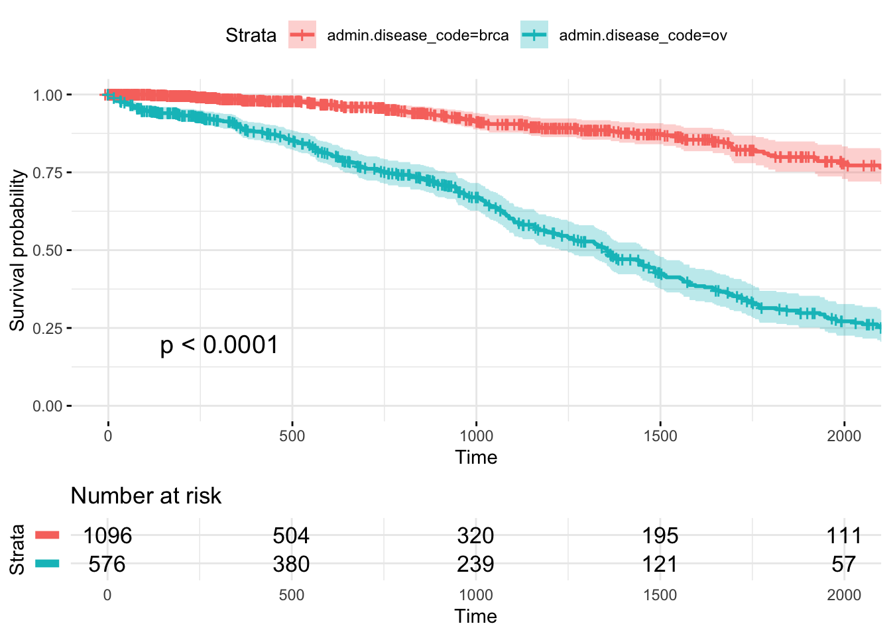
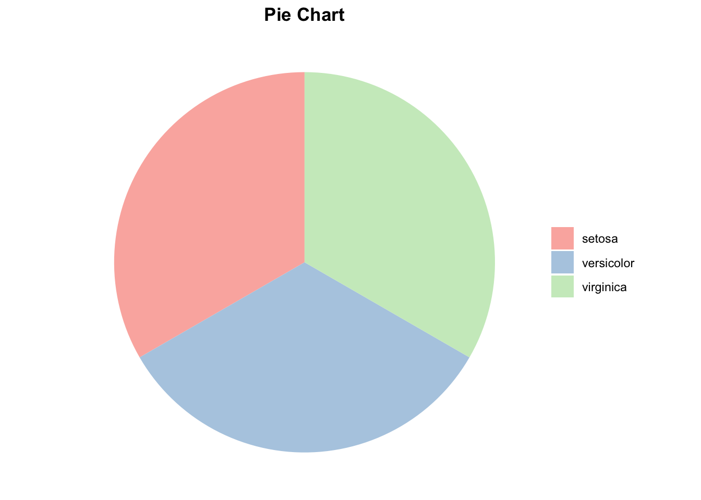

Last updated: 2024-09-16
Checks: 7 0
Knit directory: Tutorials/
This reproducible R Markdown analysis was created with workflowr (version 1.7.1). The Checks tab describes the reproducibility checks that were applied when the results were created. The Past versions tab lists the development history.
Great! Since the R Markdown file has been committed to the Git repository, you know the exact version of the code that produced these results.
Great job! The global environment was empty. Objects defined in the global environment can affect the analysis in your R Markdown file in unknown ways. For reproduciblity it’s best to always run the code in an empty environment.
The command set.seed(20240905) was run prior to running
the code in the R Markdown file. Setting a seed ensures that any results
that rely on randomness, e.g. subsampling or permutations, are
reproducible.
Great job! Recording the operating system, R version, and package versions is critical for reproducibility.
Nice! There were no cached chunks for this analysis, so you can be confident that you successfully produced the results during this run.
Great job! Using relative paths to the files within your workflowr project makes it easier to run your code on other machines.
Great! You are using Git for version control. Tracking code development and connecting the code version to the results is critical for reproducibility.
The results in this page were generated with repository version 8b0b07a. See the Past versions tab to see a history of the changes made to the R Markdown and HTML files.
Note that you need to be careful to ensure that all relevant files for
the analysis have been committed to Git prior to generating the results
(you can use wflow_publish or
wflow_git_commit). workflowr only checks the R Markdown
file, but you know if there are other scripts or data files that it
depends on. Below is the status of the Git repository when the results
were generated:
Ignored files:
Ignored: .DS_Store
Ignored: data/.DS_Store
Untracked files:
Untracked: data/COADREAD.clin.merged.picked.txt
Untracked: data/COADREAD.rnaseqv2__illuminahiseq_rnaseqv2__unc_edu__Level_3__RSEM_genes_normalized__data.data.txt
Untracked: data/Rstudio.png
Untracked: data/tumor_size_patient_survival.csv
Untracked: output/data.csv
Untracked: test.R
Unstaged changes:
Modified: analysis/.DS_Store
Deleted: analysis/Module_1_Basics.Rmd
Deleted: analysis/Module_2_Visualisation.Rmd
Deleted: analysis/Module_3_Univariate_Analysis.Rmd
Deleted: analysis/Module_5_Unsupervised_Learning.Rmd
Deleted: analysis/about.Rmd
Deleted: analysis/supervised_learning_final.Rmd
Note that any generated files, e.g. HTML, png, CSS, etc., are not included in this status report because it is ok for generated content to have uncommitted changes.
These are the previous versions of the repository in which changes were
made to the R Markdown (analysis/Visualisation.Rmd) and
HTML (docs/Visualisation.html) files. If you’ve configured
a remote Git repository (see ?wflow_git_remote), click on
the hyperlinks in the table below to view the files as they were in that
past version.
| File | Version | Author | Date | Message |
|---|---|---|---|---|
| Rmd | 8b0b07a | tkcaccia | 2024-09-16 | Start my new project |
| html | 6301d0a | tkcaccia | 2024-09-16 | Build site. |
| html | 897778a | tkcaccia | 2024-09-16 | Build site. |
| html | 1a34734 | tkcaccia | 2024-09-16 | Build site. |
| html | 5033c12 | tkcaccia | 2024-09-16 | Build site. |
| Rmd | e9cf751 | tkcaccia | 2024-09-16 | Start my new project |
Data visualisation helps to tell stories about the data in a form that is appealing and easy to understand and draw conclusions. It is said that “a picture is worth a thousand words”
R is equipped with powerful predefined visualisation features() and more add-on features used to create complex but aesthetically pleasing graphs
Learning Objectives:
Understand and Apply Scatter Plots
Analyze and Interpret Box Plots
Create and Customize Heatmaps
Conduct and Visualize Survival Analysis
Scatter plots are useful for visualizing the relationship between two continuous variables.
library(ggplot2)
library(dplyr)
head(starwars)# A tibble: 6 × 14
name height mass hair_color skin_color eye_color birth_year sex gender
<chr> <int> <dbl> <chr> <chr> <chr> <dbl> <chr> <chr>
1 Luke Sky… 172 77 blond fair blue 19 male mascu…
2 C-3PO 167 75 <NA> gold yellow 112 none mascu…
3 R2-D2 96 32 <NA> white, bl… red 33 none mascu…
4 Darth Va… 202 136 none white yellow 41.9 male mascu…
5 Leia Org… 150 49 brown light brown 19 fema… femin…
6 Owen Lars 178 120 brown, gr… light blue 52 male mascu…
# ℹ 5 more variables: homeworld <chr>, species <chr>, films <list>,
# vehicles <list>, starships <list>#summary(starwars)
# cleaning the dataset to remove NA values for height & mass
starwars_QC <- starwars %>%
filter(!is.na(height)&!is.na(mass))
# filtering the dataset to remove outliers
starwars_QC1 <- starwars_QC %>%
filter(height < 300 & mass < 500)
# Create scatter plot
ggplot(starwars_QC1, aes(x = height, y = mass)) +
geom_point() +
labs(title = "Relationship between Mass and Height", x = "Height(cm)", y = "Mass(kg)") +
theme_minimal()
| Version | Author | Date |
|---|---|---|
| 5033c12 | tkcaccia | 2024-09-16 |
The correlation between 2 variables is found with the
cor() function.
Suppose we want to compute the correlation between height and mass in
the starwars_QC1 dataset:
# Calculate correlation
correlation <- cor(starwars_QC1$height, starwars_QC1$mass, use = "complete.obs")
print(paste("Correlation coefficient between height and mass:", round(correlation, 2)))[1] "Correlation coefficient between height and mass: 0.75"The Pearson correlation is computed by default with the
cor() function. If you want to compute the Spearman or
Kendall's tau-b correlation, add the argument
method = "spearman"
# Fit linear model
model <- lm(mass ~ height, data = starwars_QC1)
# Print model summary
summary(model)
Call:
lm(formula = mass ~ height, data = starwars_QC1)
Residuals:
Min 1Q Median 3Q Max
-39.006 -7.804 0.508 4.007 57.901
Coefficients:
Estimate Std. Error t value Pr(>|t|)
(Intercept) -31.25047 12.81488 -2.439 0.0179 *
height 0.61273 0.07202 8.508 1.14e-11 ***
---
Signif. codes: 0 '***' 0.001 '**' 0.01 '*' 0.05 '.' 0.1 ' ' 1
Residual standard error: 19.49 on 56 degrees of freedom
Multiple R-squared: 0.5638, Adjusted R-squared: 0.556
F-statistic: 72.38 on 1 and 56 DF, p-value: 1.138e-11Plotting the regression line for the relationship
ggplot(starwars_QC1, aes(x = height, y = mass)) +
geom_point() +
geom_smooth(method = "lm", color = "blue", se = FALSE) +
labs(title = "Relationship between Height and Mass",
x = "Height (cm)",
y = "Mass (kg)") +
theme_minimal()`geom_smooth()` using formula = 'y ~ x'
| Version | Author | Date |
|---|---|---|
| 5033c12 | tkcaccia | 2024-09-16 |
# Regression diagnostics
par(mfrow = c(2, 2)) # Set up plotting area for 4 plots
plot(model)
| Version | Author | Date |
|---|---|---|
| 5033c12 | tkcaccia | 2024-09-16 |
A boxplot or a box-and-whisker plot is a standard method used to
display the distribution of a dataset based on its five-number summary
of data points; minimum, first quartile[Q1],
median, third quartile[Q3], and
maximum.
A box plot can tell you that your data is symmetrical, has outliers or skewed
data("iris")
head(iris) Sepal.Length Sepal.Width Petal.Length Petal.Width Species
1 5.1 3.5 1.4 0.2 setosa
2 4.9 3.0 1.4 0.2 setosa
3 4.7 3.2 1.3 0.2 setosa
4 4.6 3.1 1.5 0.2 setosa
5 5.0 3.6 1.4 0.2 setosa
6 5.4 3.9 1.7 0.4 setosaCreate a box plot of Sepal Length by Species using the iris dataset
ggplot(iris, aes(x = Species, y = Sepal.Length, fill = Species)) +
geom_boxplot() +
labs(title = "Box Plot of Sepal Length by Species",
x = "Species",
y = "Sepal Length (cm)") +
theme_minimal()
| Version | Author | Date |
|---|---|---|
| 5033c12 | tkcaccia | 2024-09-16 |
We can compare the species list
#install.packages("ggpubr")
library(ggpubr)
library(ggplot2)
# Define the colors for the boxplot
cols <- c("red", "blue", "green")
# Prepare the dataset (using Sepal.Length as the continuous variable)
df <- data.frame(Sepal.Length = iris$Sepal.Length, Species = iris$Species)
# Define comparisons for pairwise Wilcoxon test
my_comparisons <- list(c("setosa", "versicolor"), c("setosa", "virginica"), c("versicolor", "virginica"))
# Create the boxplot
ggboxplot(df, x = "Species", y = "Sepal.Length", width = 0.8, palette = cols,
fill = "Species", add = "jitter", ylim = c(4, 9.5), # Increase ylim to provide space for labels
add.params = list(size = 0.5, jitter = 0.2, fill = "Species"),
shape = 21) +
labs(y= "Sepal Length", x = "Species", title = "Box plot sepal length by species") +
stat_compare_means(method = "kruskal.test") + # Overall comparison using Kruskal-Wallis test
stat_compare_means(comparisons = my_comparisons,
method = "wilcox.test",
label = "p.signif",
label.y = c(8.5, 9.2, 8.7)) + # Manually adjust the position of significance labels
theme(legend.position = "none", plot.margin = unit(c(2, 1, 1, 1), "cm"))
| Version | Author | Date |
|---|---|---|
| 5033c12 | tkcaccia | 2024-09-16 |
Heat maps or heatmaps allow us to simultaneously visualize clusters of samples and features.
There are multiple R packages and functions for drawing interactive and static heatmaps, including:
heatmap() [R base function, stats package]: Draws a
simple heatmap
heatmap.2() [gplots R package]: Draws an enhanced
heatmap compared to the R base function.
pheatmap() [pheatmap R package]: Draws pretty
heatmaps and provides more control to change the appearance of
heatmaps.
d3heatmap() [d3heatmap R package]: Draws an
interactive/clickable heatmap
Heatmap() [ComplexHeatmap R/Bioconductor package]:
Draws, annotates and arranges complex heatmaps (very useful for genomic
data analysis)
We shall use the mtcars dataset.
#standardising the data to make variables comparable
df <- scale(mtcars)
# Default plot
heatmap(df, scale = "none")
| Version | Author | Date |
|---|---|---|
| 5033c12 | tkcaccia | 2024-09-16 |
We can customise by using the RColorBrewer color palette
to change the appearance. The arguments RowSideColors and
ColSideColors are used to annotate rows and columns
respectively.
library("RColorBrewer")
col <- colorRampPalette(brewer.pal(10, "RdYlBu"))(256)
heatmap(df, scale = "none", col = col,
RowSideColors = rep(c("blue", "pink"), each = 16),
ColSideColors = c(rep("purple", 5), rep("orange", 6)))
| Version | Author | Date |
|---|---|---|
| 5033c12 | tkcaccia | 2024-09-16 |
Survival analysis involves a set of statistical approaches used to investigate the time it takes for an event of interest to occur.
In cancer studies, survival analysis is used for patients survival time analyses with typical research questions like;
What is the impact of certain clinical characteristics on patient’s survival?
What is the probability that an individual survives after 3 years?
Are there differences in survival between groups of patients?
#install.packages('survminer')
BiocManager::install("RTCGA.clinical") # data for examples'getOption("repos")' replaces Bioconductor standard repositories, see
'help("repositories", package = "BiocManager")' for details.
Replacement repositories:
CRAN: https://cran.rstudio.com/Bioconductor version 3.18 (BiocManager 1.30.23), R 4.3.3 (2024-02-29)Old packages: 'abind', 'arrow', 'BiocManager', 'boot', 'broom.helpers',
'caTools', 'clock', 'corrplot', 'cpp11', 'curl', 'data.table', 'Deriv',
'DescTools', 'digest', 'emmeans', 'EnvStats', 'expm', 'fastDummies', 'gert',
'ggrepel', 'golem', 'hardhat', 'harmony', 'httr2', 'lpSolve', 'matrixStats',
'microbenchmark', 'minqa', 'mvtnorm', 'nlme', 'openssl', 'ps', 'ragg',
'RANN', 'RcppArmadillo', 'RcppEigen', 'recipes', 'reticulate', 'rmarkdown',
'sf', 'sfsmisc', 'Signac', 'spatstat.explore', 'spatstat.univar',
'spatstat.utils', 'spData', 'spdep', 'tinytex', 'waldo', 'wk', 'xfun'library(survminer)
library(RTCGA.clinical)Loading required package: RTCGAWelcome to the RTCGA (version: 1.32.0). Read more about the project under https://rtcga.github.io/RTCGA/survivalTCGA(BRCA.clinical, OV.clinical,
extract.cols = "admin.disease_code") -> BRCAOV.survInfo
library(survival)
Attaching package: 'survival'The following object is masked from 'package:survminer':
myelomafit <- survfit(Surv(times, patient.vital_status) ~ admin.disease_code,
data = BRCAOV.survInfo)
# Visualize with survminer
ggsurvplot(fit, data = BRCAOV.survInfo, risk.table = TRUE)
| Version | Author | Date |
|---|---|---|
| 5033c12 | tkcaccia | 2024-09-16 |
The simple plot above shows an estimate of survival probability depending on days from cancer diagnostics grouped by cancer types. Additionally an informative risk set table which shows the number of patients that were under observation in the specific period of time.
One can create a powerful informative survival plot with such specification of the parameters
ggsurvplot(
fit, # survfit object with calculated statistics.
data = BRCAOV.survInfo, # data used to fit survival curves.
risk.table = TRUE, # show risk table.
pval = TRUE, # show p-value of log-rank test.
conf.int = TRUE, # show confidence intervals for point estimates of survival curves.
xlim = c(0,2000), # present narrower X axis, but not affect survival estimates.
break.time.by = 500, # break X axis in time intervals by 500.
ggtheme = theme_minimal(), # customize plot and risk table with a theme.
risk.table.y.text.col = T, # colour risk table text annotations.
risk.table.y.text = FALSE # show bars instead of names in text annotations in legend of risk table
)
| Version | Author | Date |
|---|---|---|
| 5033c12 | tkcaccia | 2024-09-16 |
A pie chart represents the proportion of each species in the dataset.
# Load necessary libraries
library(dplyr)
library(ggplot2)
# Create a data frame with counts of Species
x <- as.data.frame(table(iris$Species))
# Create a pie chart using ggplot2
ggplot(x, aes(x = "", y = Freq, fill = Var1)) +
geom_bar(stat = "identity", width = 1) +
coord_polar(theta = "y") +
labs(title = "Pie Chart") +
theme_void() +
scale_fill_brewer(palette = "Pastel1") +
theme(legend.title = element_blank(),
plot.title = element_text(hjust = 0.5, face = "bold"))
| Version | Author | Date |
|---|---|---|
| 5033c12 | tkcaccia | 2024-09-16 |
sessionInfo()R version 4.3.3 (2024-02-29)
Platform: aarch64-apple-darwin20 (64-bit)
Running under: macOS Sonoma 14.5
Matrix products: default
BLAS: /Library/Frameworks/R.framework/Versions/4.3-arm64/Resources/lib/libRblas.0.dylib
LAPACK: /Library/Frameworks/R.framework/Versions/4.3-arm64/Resources/lib/libRlapack.dylib; LAPACK version 3.11.0
locale:
[1] en_US.UTF-8/en_US.UTF-8/en_US.UTF-8/C/en_US.UTF-8/en_US.UTF-8
time zone: America/Bogota
tzcode source: internal
attached base packages:
[1] stats graphics grDevices utils datasets methods base
other attached packages:
[1] survival_3.7-0 RTCGA.clinical_20151101.32.0
[3] RTCGA_1.32.0 survminer_0.4.9
[5] RColorBrewer_1.1-3 ggpubr_0.6.0
[7] dplyr_1.1.4 ggplot2_3.5.1
[9] workflowr_1.7.1
loaded via a namespace (and not attached):
[1] tidyselect_1.2.1 viridisLite_0.4.2 farver_2.1.2
[4] viridis_0.6.5 bitops_1.0-8 fastmap_1.2.0
[7] RCurl_1.98-1.16 promises_1.3.0 XML_3.99-0.17
[10] digest_0.6.36 lifecycle_1.0.4 processx_3.8.4
[13] magrittr_2.0.3 compiler_4.3.3 rlang_1.1.4
[16] sass_0.4.9 tools_4.3.3 utf8_1.2.4
[19] yaml_2.3.10 data.table_1.15.4 knitr_1.48
[22] ggsignif_0.6.4 labeling_0.4.3 xml2_1.3.6
[25] abind_1.4-5 withr_3.0.1 purrr_1.0.2
[28] grid_4.3.3 fansi_1.0.6 git2r_0.33.0
[31] xtable_1.8-4 colorspace_2.1-1 scales_1.3.0
[34] cli_3.6.3 rmarkdown_2.27 generics_0.1.3
[37] rstudioapi_0.16.0 km.ci_0.5-6 httr_1.4.7
[40] commonmark_1.9.1 cachem_1.1.0 stringr_1.5.1
[43] splines_4.3.3 ggthemes_5.1.0 rvest_1.0.4
[46] assertthat_0.2.1 BiocManager_1.30.23 survMisc_0.5.6
[49] vctrs_0.6.5 Matrix_1.6-5 jsonlite_1.8.8
[52] carData_3.0-5 car_3.1-2 callr_3.7.6
[55] rstatix_0.7.2 tidyr_1.3.1 jquerylib_0.1.4
[58] glue_1.7.0 ps_1.7.7 ggtext_0.1.2
[61] stringi_1.8.4 gtable_0.3.5 later_1.3.2
[64] munsell_0.5.1 tibble_3.2.1 pillar_1.9.0
[67] htmltools_0.5.8.1 R6_2.5.1 KMsurv_0.1-5
[70] rprojroot_2.0.4 evaluate_0.24.0 lattice_0.22-6
[73] markdown_1.13 highr_0.11 backports_1.5.0
[76] gridtext_0.1.5 broom_1.0.6 httpuv_1.6.15
[79] bslib_0.8.0 Rcpp_1.0.13 gridExtra_2.3
[82] nlme_3.1-165 mgcv_1.9-1 whisker_0.4.1
[85] xfun_0.46 fs_1.6.4 zoo_1.8-12
[88] getPass_0.2-4 pkgconfig_2.0.3